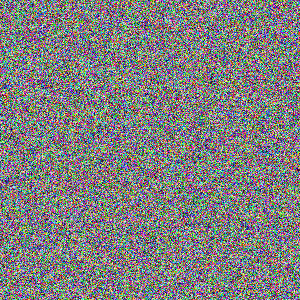

<!-- this is the same png as in the data uri in 1805599-1.svg. svg's used as images cannot contain external images so it has to be a data uri in the svg, here is doesn't matter, we use a png to save space. to trigger the bug the data uri necessarily has to be large, if its too small then we load the data quickly enough that we don't require to invalidate the svg after painting it once before the data uri is loaded -->

